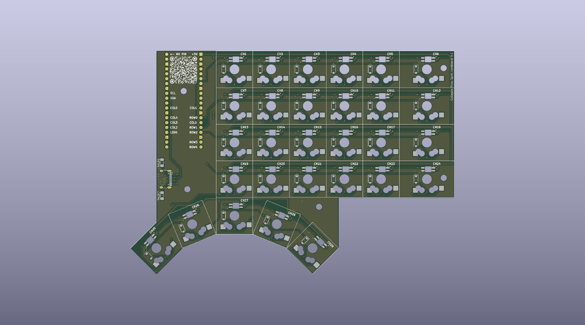

Résumé
Le clavier est « right only » : une seule moitié, la droite, sert de clavier complet (le PCB est conçu réversible, voir plus bas). La couche BASE porte le côté droit de l'AZERTY ; un double-tap sur Ctrl bascule sur la couche FN, qui porte le côté gauche. Un triple-tap active le mode GAMING (ZQSD, éclairage dédié).
Couches
Les légendes sont celles obtenues sous un système en AZERTY français (VIA affiche les keycodes QWERTY US, d'où les correspondances du readme).
La touche Ctrl multi-tap
Une seule touche (CTRL_TOG, matrice 4,4) pilote les couches grâce à un compteur de taps dans la fenêtre TAPPING_TERM (200 ms par défaut).
| Taps | Effet |
|---|---|
| 1× | Ctrl normal (enfoncé dès l'appui) |
| 2× | Bascule la couche FN (désactive GAMING si elle était active) |
| 3× | Bascule la couche GAMING (désactive FN), compteur remis à zéro |
Le PCB
Dessiné sous KiCad : « Colagan Pico Split KeyBoard V2 », version fabriquée chez JLCPCB en novembre 2025. Il est conçu réversible (empreintes « Reverse ») : le même circuit sert pour les deux moitiés, en le retournant.

- Grille : 6 colonnes × 4 rangées au pas de 19,05 mm ; la colonne extérieure (CH6, CH12, CH18, CH24) fait 1,5U.
- Pouces : cinq touches en arc sous la grille, du côté intérieur. CH27 est droite sous la première colonne ; CH26 et CH28 sont inclinées de 22,5° ; CH25 et CH29, plus bas, de 45°. Les extrêmes s'écartent vers l'extérieur de l'arc.
- Interrupteurs : empreintes KS33 (Gateron low profile), une LED CMS et une diode par touche.
- Électronique : support Raspberry Pi Pico en haut à gauche, USB-C 16 broches avec ses deux résistances de 5,1 kΩ. Pas de convertisseur de niveau pour les LEDs : la ligne de données 3,3 V du Pico attaque directement la première LED.
Sources : SplitKeyboard Colagan V2.kicad_pcb (positions et rotations lues dans le fichier) ; rendu 3D généré avec kicad-cli.
Matériel
Ordre des LEDs (chaîne linéaire)
rangée 0 : 0 1 2 3 4 5 (CH1 → CH6) rangée 1 : 6 7 8 9 10 11 (CH7 → CH12) rangée 2 : 12 13 14 15 16 17 rangée 3 : 18 19 20 21 22 23 pouces : 24 25 26 27 28 (CH25 → CH29)
Vérifié dans le PCB : la sortie de la LED de chaque touche est reliée à l'entrée de la suivante, dans l'ordre CH1 à CH29, toujours de gauche à droite.
Luminosité maximale 200/255. Plus de 40 animations RGB matrix activées pour les couches BASE et FN.
Build & flash
./build.sh # copie keymap + config + keyboard.json vers qmk_firmware, compile, récupère firmware.uf2 ./flash.sh # copie firmware.uf2 sur le Pico monté en /media/$USER/RPI-RP2
- Bootloader : maintenir BOOT, appuyer sur RESET, relâcher BOOT (ou double-tap rapide sur RESET).
- Reset EEPROM : débrancher, maintenir la touche en haut à gauche (matrice 0,0), rebrancher (bootmagic).
- Commande de compilation :
qmk compile -kb colagan_v2_right_only -km via
qmk_env a été créé avec Python 3.13 ; le système est passé en 3.14 et la CLI qmk ne démarre plus. Il faut recréer le venv (python3 -m venv puis pip install qmk) avant de recompiler.
Contenu du dépôt
colagan-pico-split-keyboard/ ├── keyboard.json # matériel : matrice, LEDs, USB, layout ├── keymaps/via/ # keymap VIA : keymap.c, config.h, rules.mk ├── keymaps/vial/ # variante Vial : + vial.json ├── build.sh · flash.sh # compilation et flash ├── firmware.uf2 # dernier firmware compilé (v0.3) ├── hardware/ # sources KiCad du PCB, captures, export 3D ├── readme.md # guide d'utilisation détaillé └── docs/index.html # cette page (+ docs/img : captures du PCB)
Pour compiler, le projet dépend d'un clone de qmk_firmware dans lequel build.sh copie les fichiers : la définition du clavier n'est pas encore autonome.
Pistes d'amélioration
Relevés à la lecture du code et des fichiers de configuration. Les points marqués « à vérifier » demandent un essai sur le clavier physique.
Comportement
- À vérifierCoordonnées des LEDs dans
keyboard.json. Les rangées 1 et 3 y sont décrites de droite à gauche (serpentin) alors que la chaîne du PCB est linéaire, et les positions des pouces sont approximatives. Les LEDs fonctionnent (le mode GAMING utilise les bons indices), mais les effets spatiaux (dégradés gauche-droite, vagues, spirales) pourraient paraître décalés sur ces rangées : à regarder sur le clavier. - À vérifierCtrl rapides. Deux appuis sur Ctrl en moins de 200 ms (par exemple Ctrl+C puis Ctrl+V enchaînés) peuvent être pris pour un double-tap et basculer la couche FN.
- IdéeRemplacer le compteur maison par un Tap Dance QMK, ou donner à FN une touche de couche dédiée (momentanée) pour éviter de basculer au clavier.
- IdéeIndiquer visuellement la couche active (LED dédiée ou couleur) pour BASE et FN, comme c'est déjà fait pour GAMING.
Matériel et structure
- IdéeCorriger la section
layoutdekeyboard.json(pouces, colonne 1,5U) à partir du PCB pour que VIA affiche la vraie forme. - IdéeLe PCB étant réversible, compléter la moitié gauche pour un vrai clavier split (l'ancien dossier
colagan_v2n'existe plus que dans l'historique deqmk_firmware). - IdéeRendre le dépôt autonome avec un QMK userspace (
qmk_userspace) et un workflow GitHub Actions qui compile le.uf2à chaque commit. - IdéeRapprocher les variantes VIA et Vial ; la version de
keyboard.jsondeqmk_firmwareutilise la nouvelle syntaxe VIA (menus/keycodes) et diffère de celle de ce dépôt.
Documentation et hygiène
- DocLe readme annonce un câblage serpentin et 30 touches/LEDs ; le PCB est linéaire et
keyboard.jsonen définit 29 (24 + 5 pouces). - DocLuminosité par défaut : le readme et le commentaire de
config.hdisent 10 % (26/255), la valeur codée est128(environ 50 %). - DocLes messages de commit sont répétés (« v0.3 gaming layout » ×4) ; adopter Conventional Commits et des tags de version (
v0.3). - DocLes dossiers
.idea/et.claude/ne devraient pas être suivis par git.
Historique
- V0.1 — première version fonctionnelle.
- v0.2 — essais puis mise au propre du RGB (« rgb ok », « clean »).
- v0.3 « gaming layout » — couche GAMING avec ZQSD, couleurs par touche, contrôles de luminosité intégrés.
Onze commits, tous le 23 novembre 2025 ; firmware compilé le 24 novembre 2025.